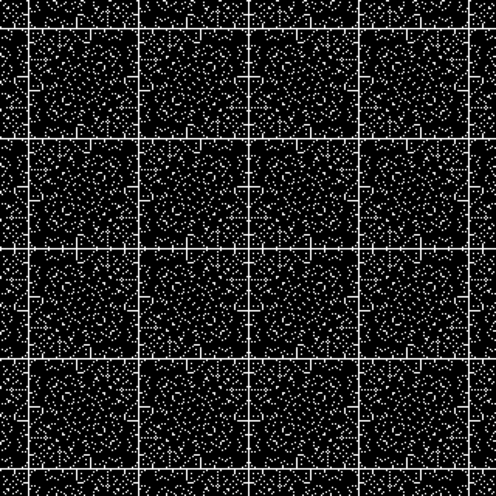

Modulus Mandalas
These patterns are each just a part of an infinite tapestry, and in turn each tapestry is part of an infinite abstract space of tapestries. They are created by an exceedingly simple generative rule, essentially a binary test of whether pixel coordinates obey the equation (x*y) % t*n % t = 0 Although the patterns are beautiful, the fact that one simple equation generates such variety is perhaps even more beautiful.